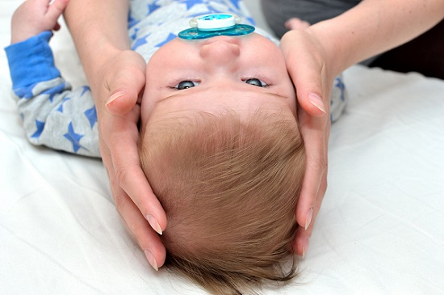
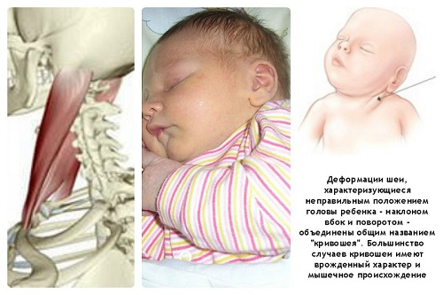
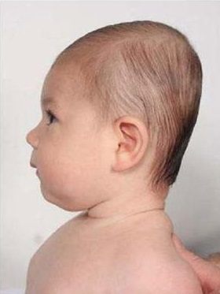
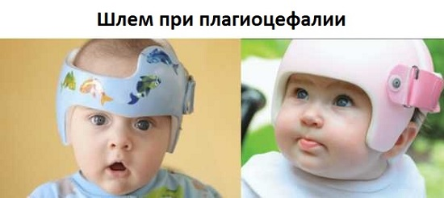

Наиболее распространенная причина развития необычной формы черепа у детей — позиционная плагиоцефалия (ПП), также известная как «синдром плоской головы». Кости черепа младенца не срастаются вместе, чтобы дать возможность расти мозгу. Это также означает, что внешнее давление на них может послужить причиной появления плоских участков на этом красивом маленьком округлом черепе. Исследования показали, что приток крови к мозгу и рост мозга под уплощенными участками не отличается от нормального. Так что не нужно переживать из-за того, что плоская голова не даст нормально расти подлежащей части головного мозга.
В отличие от краниосиностоза синдром плоской головы не является результатом преждевременного сращения костей черепа. Скорее это происходит вследствие того, что ребенок спит в одном и том же положении или постоянно на одной стороне головы. Некоторые дети предпочитают спать, повернув голову налево или направо. Поскольку череп младенцев младшего возраста очень пластичный, лежание на одной стороне в течение длительного периода времени может привести к уплощению этой части головы. Со времен начала спасительной кампании «Сон на спине» педиатры столкнулись с «эпидемией» уплощенных голов (затылков). Хорошая новость в том, что у большинства детей — это безобидная и временная косметическая особенность. Младенцы с кривошеей могут быть предрасположены к позиционной плагиоцефалии.

ЧТО ДЕЛАТЬ
Поскольку ПП обычно возникает вследствие сна в одном и том же положении и воздействия давления на один и тот же участок черепа, самое простое средство — стимулировать ребенка менять положение головы во время сна.
Уплощенная голова часто встречается в ранние месяцы развития, когда дети не столь подвижны во время сна. Голова округлится по мере того, как ребенок растет и становится способен самостоятельно менять положение во время сна, таким образом равномерно распределяя давление на растущий череп. |
ЧТО МОЖЕТ СДЕЛАТЬ ВРАЧ
Расскажите о ваших переживаниях врачу и покажите ему серии фотографий. Сообщите ему, если считаете, что состояние уплощенной части не улучшилось за последние несколько месяцев, особенно если вы применяли репозиционную терапию. В такой ситуации врач проведет тщательный осмотр черепа вашего ребенка, пытаясь установить, является ли причиной уплощения обычное позиционирование или же это происходит вследствие одной из двух проблем: краниосиностоза (преждевременного сращения одного или более швов между костями черепа) или кривошеи.

Помимо вышеописанной «лысинки» врач осмотрит форму головы в целом. Исследования различий позиционной плагиоцефалии (также называемой «позиционным сращением») от краниосиностоза показывают следующее: если голова ребенка имеет форму параллелограмма, это, скорее всего, временное явление. Но если голова имеет форму трапеции, это может означать, что неправильная форма является следствием преждевременного смыкания швов (краниосиностоз).
Как правило, чтобы определить разницу между позиционной плагиоцефалией и краниосиностозом (сращением черепных костей), врачу достаточно осмотра и ощупывания костей черепа. Если уверенности в диагнозе нет, врач может назначить рентгенографию или компьютерную томографию костей черепа. При выявлении еще и кривошеи вас могут направить к физиотерапевту, который расскажет, как проводить ее надлежащее вытяжение.
НУЖЕН ЛИ МОЕМУ РЕБЕНКУ ШЛЕМ?
Обычно репозиция — это все, что нужно для коррекции. Но если репозиционная терапия не была начата к концу первого года жизни, врач может порекомендовать ношение шлема или головной повязки, которые помогут вернуть голове округлую форму.
СОВЕТ ДОКТОРОВ СИРС: ИЩИТЕ «ЛЫСИНКУ» Если волосы на уплощенной части головы выгладят более потрепанными, это является ключом к тому, что причина плоской головы ребенка — позиционная плагиоцефалия. |
Вопреки распространенному мнению, такой шлем не сдавливает голову для ее округления, а, наоборот, позволяет ей заполнить свободный объем по мере роста. Шлемы также уменьшают давление на уплощенную часть во время сна. Большинству младенцев нужно носить подобные бандажи всего несколько месяцев.

Здоровье ребенка от докторов Сирс / Сирс У. и др.